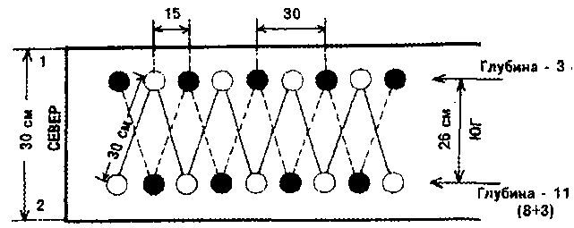

ИЗДАНИЕ 57
Лучший посадочный материал - картофелины весом 30-100 г. Весной их проращивают на свету 30-50 дней. Ученые рекомендуют держать яровизируемый картофель в первую неделю при +16-18 градусах, а затем постепенно снижать температуру. В последние 10 дней перед посадкой желательно закаливать посадочный картофель при +4-6 град., занеся его в погреб. Большие клубни с нитевидными ростками надо выбрасывать (выбраковывать). Удобнее проращивать в квартире в больших открытых стеклянных банках, но не на жарком солнце. С успехом яровизируют картофель в полиэтиленовых мешках. Их можно подвешивать. Непременно сделайте по всей площади пленки отверстия диаметром 1.5 см. через 10 см.
Для получения раннего картофеля требуется 7-10-дневное проращивание во влажном торфе или опилках. Для ранней продукции лучше высаживать крупные клубни. Перед проращиванием делают в средней части клубня кольцевой надрез "урожайное кольцо". Втыкают нож и поворачивают картофелину вокруг лезвия так, чтобы перемычка стала минимальной, 1-2 см в диаметре. Перед посадкой крупные клубни разламывают надвое по размеру. В результате не только верхушечные, а все глазки дают крепкие ростки. Кусты делаются гуще, мощнее. Перед посадкой большие картофелины разрезают не поперек, а вдоль. Затем подсушивают около суток. Внимание! Если почва переувлажненная, сажать разрезанными картофелинами - рискованно, он может загнить. Почва вскапывается на глубину 15-20 см. Расстояние между рядами 60 см, между гнездами 30-35 см. В лунку кладется 200 г навоза или торфа-компоста. Удобрение присыпается землей на 2 см, на которую кладется клубень. Глубина заделки 5-7 см на легких почвах и 4-5 см на тяжелых.
Ускоряет получение раннего картофеля гребневая посадка. В основание гребня, куда высаживаются клубни, создается благоприятный водно-воздушный режим, повышается температура. Без полива ранний картофель вырастить трудно. Очень полезно присыпать почву слоем торфяной крош"-ки или опилок в 2-3 см, покрыть пленкой с отверстиями как прозрачной, так и черной. Главное на каждом квадратном метре надо сделать 100-200 отверстий около 1 см диаметром. Пленкой покрывают грядки сразу после посадки, засыпая края землей. Снимают после появления полных всходов. Применив эти приемы, можно даже в Заполярье получить ранний картофель уже в середине июля. Поскольку картофель в этом случае собирается мелкий, то и посадку лучше сделать загущенной. Для получения раннего урожая посадку ведут целыми клубнями скороспелого сорта, причем крупными, по 80-100 г. или средними по 50-60 г.
Прибавку урожая на 10-15% и повышение крахмальности Вы получите, опудрив перед посадкой золой смоченные водой клубни. На 50 кг картошки - 1 кг золы. Картофель, посаженный рано, но в холодную почву, дает урожай выше, чем тот, что посажен позже, хотя и в прогретую почву.-Защитить всходы от заморозков можно, если при неблагоприятном прогнозе закрыть грядки старыми газетами, а затем пленкой. Как только температура поднимется выше нуля, пленку снимают. Если заморозки ожидаются в то время, когда уже появились ростки, их нужно засыпать землей. С потеплением землю не отгребают. Уход за грядками начинается через 5-7 дней после посадки. Участок боронуют, выпалывают сорняки и разрыхляют почву. Через неделю обработку повторяют. По научным рекомендациям картофель окучивают дважды за лето. В первый раз, когда ростки достигли 10-12 см. Все междурядные обработки специалисты рекомендуют заканчивать до смыкания ботвы. Если почва слишком сухая - не окучивают.
КАК ВЫРАСТИТЬ ПО МЕШКУ КАРТОШКИ НА КАЖДОМ КВАДРАТНОМ МЕТРЕ
I. Посадка ведется квадратно-гнездовым способом на
расстоянии от гнезда к гнезду 60-70 см. В местах скрещи
вания линий разметки вырывают лопатой (можно совковой)
гнезда. О размерах его судите сами: в каждое гнездо засы
пается ведро перегноя. В середину кладется клубень,
сверху второе ведро перегноя. Гнездо заполняется с не
большой горкой первое окучивание проводят, когда всходы
достигнут 10 см. Разводят стебли в разные стороны и под
сыпают в пространство между ними столько перегноя, что-
oбы листья остались снаружи. Таким же образом, по мере
подрастания стеблей проводят 2-е и 3-е окучивание. При
надобности, когда почва уплотнится, взрыхляют ее. В засуш
ливое время обязательно поливают посадки, и непременно
подогретой на солнце водой.
II. Участок под картофель разбивают на полосы шириной
30 см с промежутками между ними 60-70 см. На каждые 3,5
см вносится 8-10 кг перегноя и 0,5 кг золы. Перекладывают
и по краям с 2-х сторон делают бороздки глубиной 8 см. В
первой борозде картофель размером с куриное яйцо рас
кладывают на расстоянии 30 см друг от друга, а в другой на
таком же расстоянии, но отступив от края 15 см. Таким об
разом, картофель во второй борозде расположен в шахмат
ном порядке по отношению к первой. Гряды засыпают и приступают к посадке второго яруса картофеля. Отступив от начала первой борозды 15 см, раскладывают клубни на таком же расстоянии 30 см друг от друга, но уже по поверхности почвы. Во второй борозде с противоположной стороны клубни располагаются также по поверхности почвы, но в шахматном порядке. Сверху ряды картофеля засыпают на глубину 3 см землей с дорожек. Итак, в каждой борозде получается по два вертикальных ряда посадки: один на глубине 11 см (8+3 см) и второй на глубине 3 см, причем один клубень сдвинут относительно другого на 15 см. Гряда приобретает форму траншеи с четырьмя рядами картофеля - два ряда на глубине 31 см и два других на глубине 23 см. Каждый из двух рядов не мешают другому, находясь в вертикальной плоскости.

КАК ВЫРАСТИТЬ КАРТОФЕЛЬ, УЖЕ В МАЕ МЕСЯЦЕ
Его можно иметь на столе в мае и даже в апреле, но выращивать его нужно в предыдущем году. В августе следует посадить старые проросшие картофелины в хорошо удобренную землю. Можно использовать участки, с которых снят урожай овощей. Картофель прорастает и даже зацветает. Над грядой нужно устроить временную тепличку, чтобы как можно дольше использовать теплые дни. Перед заморозком ботву срезают до самого уровня почвы, иначе она замерзнет и клубни начнут гнить. Затем грядку укрывают толстым в 10-15 см слоем навоза или торфа и соломой или сеном. При больших морозах - засыпают большим слоем снега. Как только весной почва оттает, можно выкапывать свежий молодой картофель.
О СОРТЕ КАРТОФЕЛЯ, КОТОРЫЙ НЕ ЕСТ КОЛОРАДСКИЙ ЖУК
Про батат пишут во многих газетах и журналах, как про какую-то новинку, диковинку, желая разными способами хвалить качество этой культуры. Но наверно, не все знают, что на юге страны батат - не новинка. В 30-ые годы его выращивали на больших площадях, в том числе, проводили и исследовательские работы. Поэтому можно сказать, что для наших регионов батат - это неиспользованные возможности. Наша картошка даже приблизительно не может сравниться с бататом по содержанию крахмала (30%), сахара (2,5-7,8%), калорийность последнего, например, в 1,5 раза больше и ценнее белками именно в батате, поскольку это легко усвояемые альбумины. А расход посадочного материала составляет приблизительно 90-200 кг/га, в то время, как картошка - до 3 тонн.
Батат имеет колоссальную жизненную силу, прекрасно приживается и не требует особенного ухода. Особенно ценно то, что культура эта не поражается колорадским жуком и не болеет.
Удивляет только консерватизм и странная пассивность наших дачников, огородников и всех, кто занимается сельским хозяйством. Почему не сажают батат, а упрямо сажают только картошку, получая при этом мизерные урожаи. Могут возразить: а где достать посадочный материал батата'' Да и технология его выращивания, говорят, сложная.
Во-первых, посадочного материала, особенно в конце сентября и в начале октября больше, чем достаточно. Прежде всего, это стебли, которые не нужно скармливать скоту или просто выкидывать, а черенковать. За зиму можно вырастить рассаду для любой площади. Это уж не говоря о клубнях. Достаточно 2-3 клубней и за зиму Вы вырастите рассаду для Вашего участка.
Во-вторых, при посадке схемой 70 х 70 на сотку нужно 196 растений. Вырастить такое число растений не представляет больших трудностей. К тому же батат дает очень кра.-сивый куст и, выращивая его в зимний период в горшках, получим прекрасный зеленый уголок дома.
В-третьих, главным условием выращивания батата является чистота плантации от сорняков и частые поливания. В осенний период стебель батата разрезаем лезвием на черенки с тремя почками, опускаем черенки в воду, чтобы она закрывала две почки. Через 10 дней черенки укореняются. Переносим их в горшки или просто в ящики с обычным грунтом (глубина грунта - 10.см). Периодически поливаем на протяжении всей зимы. Если черенки дают длинные побеги, их за зиму можно трижды черенковать. Высаживать в открытый грунт, если тепло, в конце апреля или в мае, при постоянной теплой погоде.
РЕЦЕПТ ПРИГОТОВЛЕНИЯ ОТРАВЫ ПРОТИВ КОЛОРАДСКОГО ЖУКА В ДОМАШНИХ УСЛОВИЯХ
Необходимо собрать полную литровую банку взрослых колорадских жуков.
Взять емкость на 20 л, высыпать туда всех жуков и залить водой, емкость закрыть. Жуки помрут, но будут еще плавать на поверхности воды. Со временем они начнут постепенно опускаться на дно. После того, как все жуки опустятся на дно - подождите 1 неделю. Через неделю яд будет готов. Но в этой пропорции он получится сильно концентрированным. Применив его неразбавленным, вы рискуете пожечь картофель. Поэтому отлейте немного яда в 3 полулитровые банки и разбавьте его в каждой банке по разному: в первой пополам (1:1), во второй (1:2), в третьей (1:3). Затем опрыскайте по несколько кустов картофеля из каждой банки. Через сутки проверьте опрысканные кусты и увидите какая концентрация подходит для вашего сорта картофеля.
Нами яд применялся свежеприготовленным, что происходит с ним при длительном хранении, усиливается он или ослабевает, мы не испытывали.
Уникальные издания.